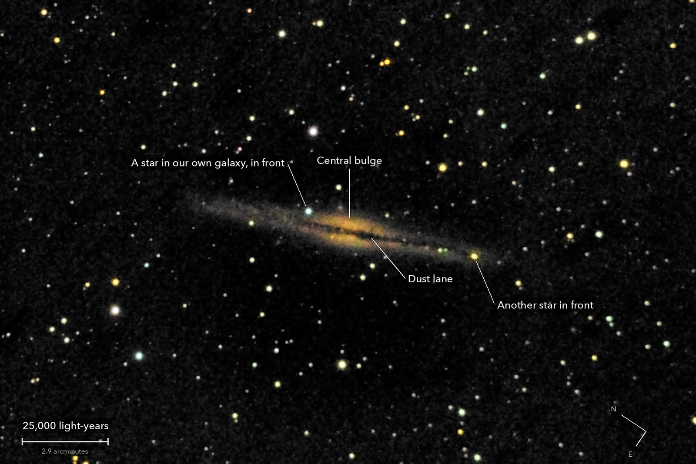

NGC 891
A spiral galaxy in Andromeda, seen edge on
A spiral galaxy much like our own, seen almost exactly from the side. The dark line down its middle is dust in the disc, the same kind of dust that draws the dark lanes through our Milky Way on a clear night. This is roughly how our own galaxy would look from outside: a thin disc of stars with a warm bulge of older stars at its centre.
What you are looking at

Swipe sideways to see the rest. Tap the picture for full size.
- Distance
- About 30 million light-years (a round figure)
- This picture spans
- 200,000 light-years; the disc shown is about 100,000 long, the size of our own galaxy
- The light left
- About 30 million years ago, when giant hornless rhinos, among the largest land mammals ever, walked Asia
- Honest note
- Seven and a half minutes of light is too little for the faint tips of the disc: about a tenth of its length is missing at each end
Technical details
30 of 31 frames of 15 s. 7.5 minutes of light on one field; no frame trailed.
Equipment
- Telescope
- Celestron 8SE Schmidt-Cassegrain: 203 mm aperture, 2,083.8 mm focal length by plate solve of this stack, f/10.3
- Camera
- Sony a6000, stock, at prime focus: APS-C 23.5 x 15.6 mm, 6000 x 4000, 3.9 micron pixels, RAW
- Mount
- Sky-Watcher EQ6-R, unguided. Set down without polar alignment, about 5 degrees off the pole; aligned from four plate-solved photos (about 1 arcminute), both axes driven from that model
Acquisition
- Exposures
- 30 x 15 s at ISO 3200: 7.5 minutes
- Frames
- 31 taken, 30 kept. Only the first frame after the slew was dropped, by rule (it measured fine). No frame trailed: stars 3.6 to 4.4 arcsec, every frame within 1.3 percent of the run's star brightness
- Sampling
- 0.776 arcsec per pixel: one pixel per 2 x 2 colour cell, never enlarged. Stars 3.8 arcsec wide (half-flux)
- Field
- 23.3 x 15.5 arcmin: an 1800 x 1200 crop round the galaxy from a stack of 38.2 x 25.4 arcmin, nothing resampled, as the camera saw it (north 56 degrees anticlockwise of up)
- When
- 13 October 2026, after midnight, over 20 minutes. Nearly overhead
- Field rotation
- 0.5 degrees over the run, because the polar axis is about 5 degrees off; corrected in registration (rotation and shift on about 180 stars, 0.26 to 0.36 px rms)
- Calibration
- No darks and no flat frames were taken. The flat is built from this run's own open sky, per colour: an elliptical fall-off (light falls off faster along the sensor's short side; green corners at 68 percent) and a measured map of 58 dust shadows over 1.9 percent of the sensor. Dust under the galaxy itself could not be measured. Hot pixels from the run itself (5,900 to 6,600 per colour plane)
Processing
- Stacking
- RAW colour planes (no demosaic), hot pixels by 3 x 3 median, registered on stars with rotation, sigma-clipped weighted mean. One sky constant per colour per frame; in the picture only, a sky plane per colour is subtracted as well. Noise 5.3 times lower than one frame (5.5 expected from the weights)
- Colour
- Shown only where the light can carry it, 3.3 percent of the picture: the stars and the galaxy's middle. The ends of the disc are grey on purpose. White stars come out slightly green: the camera's daylight white balance and matrix, with no star-colour calibration
- Finish
- The camera's daylight white balance and colour matrix. Brightness smoothed 1.2 px, arcsinh stretch. Black at the 60th percentile, gamma 0.9, S-curve 0.2, saturation x 1.15. Faint parts smoothed (bilateral, 4 px), the dark sky without colour; about 0.9 percent of the picture is exactly black
- Picture size
- 1800 x 1200 pixels
- Software
- Capture and mount: Observatory (Elixir on a Raspberry Pi 3). Stacking: numpy, OpenCV, rawpy. Plate solving: astrometry.net. Stacked from the camera's RAW frames. Nothing generated.
What the picture shows
- What is real
- The disc, followed for 11.1 arcmin (the catalogue gives 13.5). The dust lane: across the centre two ridges of light 33 arcsec apart with a dip between them 34 times the noise, and the odd and the even frames each show it alone. The warm bulge either side of the lane
- Not seen
- The lane's fine filaments, the last 1.2 arcmin of each end of the disc, and the halo: 7.5 minutes at f/10 stops at about 3 times the noise. No companion galaxies were identified
Copy for Reddit
Everything above, in the Markdown r/astrophotography posts use. Paste it into the post's text in Markdown mode.
© 2026 Brad Gessler · Celestron 8SE (8 inch, f/10.3) and Sony a6000 on an EQ6-R · San Francisco Bay Area · night of 12 October 2026
© 2026 Brad Gessler. The pictures and the words are his own; all rights reserved.